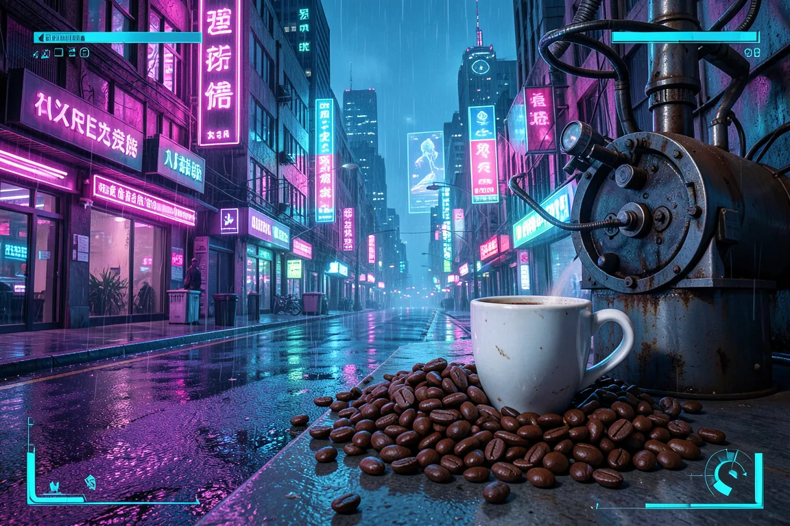

internet · 2013–now · also: Cyberpunk, Neon noir UI, High tech, low life web
A wet, neon city at night: dark ground, magenta, cyan and yellow signs, glitch, scan lines, grime, dense HUD panels and kanji or code on every edge. High tech with low life.

Core thesis
The future is crowded, dirty and bright: neon on dark, data everywhere.
Design principles
Set the ground in near-black blue (#0A0B14) and light it with neon in magenta (#FF2E88), cyan (#19E3F5) and a yellow warning (#FFE600).
Use glow: a text-shadow or box-shadow of 0 0 12px to 24px in the neon hue at 60% to 80% opacity.
Add scan lines (2px lines at 6% to 10% opacity), noise at 6% and a glitch offset of 2px to 6px in magenta and cyan on headings.
Cut panels at corners (a 12px to 24px chamfer) and frame them with a 1px neon line and small tick marks.
Fill edges with HUD detail: coordinates, serial numbers, barcodes, warning stripes and small mixed-script labels at 10px to 12px.
Set headlines in a hard, wide or condensed upper-case face and body text in a mono at 14px to 16px with 7:1 contrast.
Animate with flicker, glitch and typing: 80ms to 240ms steps; a hover flicker of 3 frames.